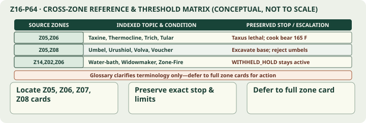

Z16-P64 · Field reference atlas · New manuscript
Encyclopedia Technical Glossary: T through Z
Locate the original encyclopedia cards for encyclopedia Technical Glossary: T through Z.
When it applies · Offline reference lookup. The linked chapter defines the situation, audience and limits.
Equipment · Offline reader or the complete linked source cards in print.

Actions
- Open Z08-P22 for thermal Shock and Wet-Rock Spalling Hazards; Z12-P57 for respect sneaker waves, slippery wet kelp ledges and surging breakwater jetties.[A10, R13, X22]
- Open Z05-P05 for flower Symmetry, Inflorescence Types and Apiaceae Umbel Stop Rule; Z05-P95 for fungal Anatomical Cutaway and Separate Mycological Schema.[A10, B20, B05]
- Read the linked card’s applicability, equipment and stop conditions together. Keep review and source limitations attached to any excerpt.[A10, ED]
Failure recognition · Acting on a keyword or title while overlooking an upstream exception or stop condition.[A10, ED]
Verify · Confirm the exact page ID and read the full conditions before using the reference.[A10, ED]
Stop or change course · If the situation falls outside a linked card’s conditions or its stop rule applies, stop using this index as a decision aid. Follow the full card and current local directions.[A10, ED]
Evidence and editorial notes
- A10 · FEMA / Ready.gov · Make a Plan (current web edition)
- Section: Offline reader navigation, historical lineage, and HOLD transparency · Conditions: Using the complete 16-zone offline archive, zone readers, and print proofs
Support: Navigation aids expose draft status, reconstruction lineage, open diagnostic photo needs, and pending specialist holds on every lookup path.
Limitations: This index entry does not independently establish any safety, regulatory or diagnostic instruction. · Conflicting evidence: None noted.
Editorial note: Index design and cross-reference policy. Substantive directions come from linked upstream chapter claims. · Specialist reviewer: Accessibility, print QA, and editorial reviewer
Primary source · checked 2026-11-24 - B05 · MyCoPortal · North American Fungal Voucher Collections Portal (Current web edition)
- Section: Separate fungal voucher collections and microscopic/macro traits · Conditions: Documenting macrofungi across North American collections
Support: Fungal taxonomy requires distinct anatomical schemas (cap, gills/pores/teeth, attachment, ring, volva, spore print, substrate, and often microscopy).
Limitations: Fungal species complexes frequently overlap macroscopically; photos alone cannot confirm edibility. · Conflicting evidence: None noted.
Editorial note: Keeps botanical and fungal schemas separate. · Specialist reviewer: Qualified mycologist
Primary source · checked 2026-11-25
Current assessment · A04-B05 (2026-11-25) · Open: support partial or missing (A04): Records can supply vouchers. No universal schema covers all fungi. Need taxon-specific monograph, angle and microscopy requirements. Limits: Specialist review PENDING (Qualified mycologist); publication HOLD. All release decisions pending. - B20 · USDA Forest Service · Celebrating Wildflowers: Plant Identification and Conservation (Current web edition)
- Section: Botanical morphology terminology and multi-character keys · Conditions: Observing leaf venation, margins, flower symmetry, and fruit anatomy
Support: Accurate plant identification requires confirming multiple independent morphological characters at the observed life stage.
Limitations: Missing flowers, fruit, or underground parts require stopping identification rather than guessing. · Conflicting evidence: None noted.
Editorial note: Enforces multi-feature identification standard. · Specialist reviewer: Plant taxonomist
Primary source · checked 2026-11-25 - R13 · National Park Service · Rocks and Minerals Geological Overview (Current web edition)
- Section: Rocks and Minerals overview · Conditions: Unrated stones near a fire or during thermal cycling
Support: Use agency-approved fire facilities and keep people away from cracking or shifting material.
Limitations: Editorial avoidance. The cited geology overview does not establish a safe rock type, moisture test or heating threshold. · Conflicting evidence: Conditions are recorded in the A03 audit.
Editorial note: Reinforces Z03/Z08 wet-rock spalling stop. · Specialist reviewer: Geologist and fire safety reviewer
Primary source · checked 2026-11-25
Current assessment · A04-R13 (2026-11-25) · Open: support partial or missing (A04): No general authorization of heated rock or context for cracking. Retain hazard avoidance as editorial and use site fire orders and material review for prescriptions. Limits: Specialist review PENDING (Geologist and fire safety reviewer); publication HOLD. All release decisions pending. - X22 · NWS · Sneaker Waves (Current web edition)
- Section: Why sneaker waves are dangerous and beach precautions · Conditions: Coast exposed to breaking swell and mobile logs
Support: A higher wave can follow a quiet interval and reach beyond prior waves. Stay back and heed local warnings.
Limitations: No fixed number of waves or minutes establishes safety. · Conflicting evidence: See A01 cross-zone review.
Editorial note: Use only within the stated conditions. · Specialist reviewer: Coastal safety
Primary source · checked 2026-11-24
Source lineage · New manuscript (Z16 P20 glossary) · Classification · New manuscript.